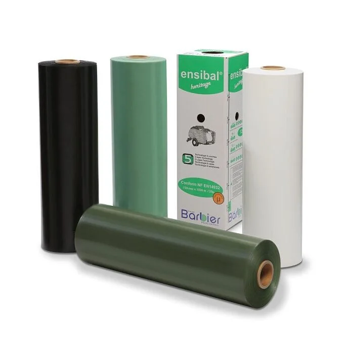

Bestseller

Barbier Ensibal LEGEND
750 mm × 1500 m
Kolory:
biały
czarny
- Technologia 5-warstwowa – równomierna, szczelna bariera na całej szerokości beli
- +30% wyższa odporność na przebicie – mniej strat na ścierniskach i przy transporcie
- Ochrona UV przez 12 miesięcy – baloty mogą spokojnie czekać na polu
- Mocny klej – warstwy zgrzewają się ze sobą i nie rozchodzą na wietrze
365 zł brutto / rolka
☎ Zadzwoń i zamów: 606 478 677